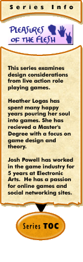

|
Pleasures of the Flesh #1: An Introductionby Heather Logas Our fifth grade class did on average an art project a week. Invariably, there would be one kid who would have some stroke of 10 year old genius and take the project in a new or cool direction that the other kids would scramble to emulate. This usually led to whining along the lines of "teacher ... so and so is copying me!" This in turn would lead to the not-so-satisfying reply of "Now Tracy, imitation is the sincerest form of flattery." But no one wants to be an imitator. We all want to be the cleverest kid in the class, the one with all the original ideas that leave the other kids unable to say anything except "Wow! that is so cool!" Many of us carry this desire to our adult lives. I have known people to focus in on their own projects completely, ignoring what others are doing because they don’t think these projects are relevant to them, because they "don't want to be influenced" by them, or are afraid of being accused of "copying". I am here to tell these folks an important secret. Ignorance is not bliss. Being unaware of the world around you will not make you more creative or ensure originality. It will instead render your creations shallow, and your ideas uninformed. Real creativity comes from finding inspiration everywhere around you, and knowing how to harness that inspiration into something understandable by others. Your personality will naturally make a mark on your project, and this is what will make it unique and original. This is true of any form of art, and includes game design. I recommend reading Greg Costikyan’s fantastic article "Don't be a Vidiot", which chastises the designers of digital games for their ignorance of non-digital gaming forms. In his article, he calls attention to the huge breadth of material available in non-digital gaming which could inform designers of digital games. This is not just for the designer who finds themselves "stuck" on a particular project. Knowledge of different forms of gaming means that the game designer has a huge body of reference to draw from for inspiration whether they are stuck or not. This column, "Pleasures of the Flesh", will be drawing on a particular form of gaming which is extremely relevant to MU*/MMORPGs: The Live Action Role Playing game. I will be discussing particular lessons from this form of gaming that could be applied to online role-playing games, both from the designer's and the player's point of view. It is my hope that in doing this I will be able to expose you, the reader, to another form of gaming which may in turn give you more tools to add to your bag of tricks. Knowledge of Live Action Role Playing games (also known as LARPs) is very useful to players and designers of MU* because of the similarities in structure between them. In a LARP, players gather in a centralized location in person (in the flesh, as it were). Each person has a character they are playing, and they dress in costume as that character to help support the ambience of the game as a whole. They are free to move through the physical space of the LARP area, and act out their characters' actions and dialogue in order to convey them to other players. Time is mostly continuous, and the time that passes in-game, tends to reflect the amount of time that simultaneously passes in the real world. The biggest difference between the structure of these games and online role-playing games is that LARPs are carried out in a physical location, whereas MU* takes place in a digital/virtual location. Two types of LARPs are analogous to two types of MU*. The continuous LARP takes place over a long period of time, with continuous characters slowly developing and players mostly guiding their own stories with only periodic prods here and there from the game masters. This is very similar to a continuous MUD. One-shot LARPs (so called by the gaming community) are LARPs which take place in an evening or weekend. Players in these LARPs have a character that they may never play past the weekend, and there is usually an externally created over-arching plot which directly impacts and guides the player-character actions. This is similar to the Skotos "Stage" game. In this column, I will be discussing strategies for both continuous and Stage games, but focusing on the latter. I intend to cover a wide variety of topics as they occur to me, but I’m happy to make this an interactive experience. If you have a strong curiosity about how LARPs handle a particular design issue, feel free to email me questions. I’m happy to answer them, and they just might give me an idea for an article. After all, I’m happy to find and harness inspiration where I can. [ #2: The Joy of One-Shots —> ]
|